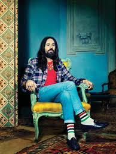
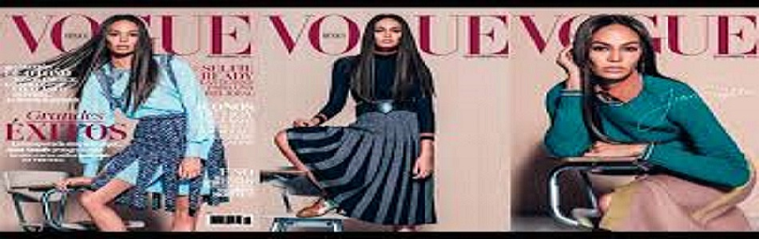
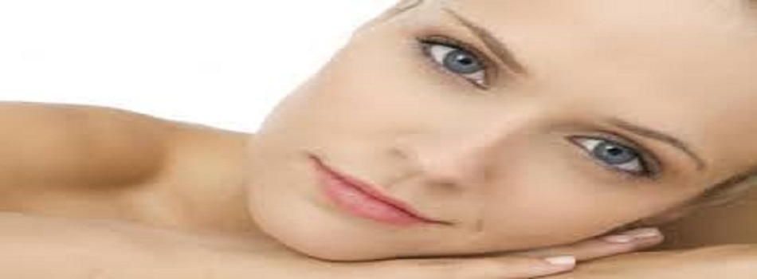

|
|
|
|
Según el informe trimestral de Lyst que registra y analiza las tendencias,
marcas y artículos más buscados de la temporada estas
son las piezas que toda fashionista ha añadido a su arsenal este año.
En un análisis en conjunto con The Business of Fashion,
se ha definido que la marca que lidera el mercado mundial de la moda es Balenciaga.
En el segundo lugar figura Gucci, bajo la dirección creativa del maximalista
Alessandro Michele.Es un diseñador de moda italiano nombrado director creativo de Gucci en enero de 2015.
Es responsable de todas las colecciones de Gucci y de la marca global.
Durante su mandato de 12 años en el estudio de diseño de Gucci, Alessandro ocupó diversos cargos: en 2006 fue nombrado Director de Diseño de Artículos de Cuero y promovido en mayo de 2011 como Asociado de la entonces Directora Creativa Frida Giannin. En 2017, Michele was listed as one of HypeBeast's HB100, an honor bestowed to the top 100 most influential people in the industry. In 2018, He was seen at the 2018 Met Gala wearing a matching ensemble with Lana Del Rey and Jared Leto |
 |

Las 12 tendencias de moda que reinarán en 2018La primera en llevarlo. El juego de las predicciones es uno de nuestros placeres favoritos: ninguna emoción de moda se vive tan intensamente como el inicio de una temporada o, mejor aún, el cambio de año. En nuestros propósitos de 2018 están pensar como Miuccia Prada y vestir como Giorgia Tordini. Llevaremos gorras de marinero, tops sobre camisas, vestidos americana y así hasta 12 grandes tendencias que predecimos llenas de éxito y estilo. | |

VOGUE UNA DE LAS REVISTAS QUE ESTA MÁS ALPENDIENTE ESTA DEL DISEÑADOR ALESSANDRO GUCCIVogue México y Latinoamérica fue publicada por primera vez en octubre de 1999 como Vogue en Español.1? Eva Hughes es considerada como la primera Directora de la revista, asumiendo el cargo en septiembre de 2002. Bajo su dirección, la revista dobló su circulación, hasta que a fines de 2012 asume la posición de CEO de Condé Nast México y Latinoamérica, abandonando su cargo luego de diez años.2? Kelly Talamas fue la encargada de reemplazar a Eva a fines de 2012. Talamas se unió a la publicación en 2007 como coordinadora editorial, para luego ser nombrada editora de moda y finalmente, como Directora de la revista. Fue la responsable de la creación de la iniciativa Who's On Next?, la cual sigue vigente y busca dar a conocer a nuevos talentos de la región. A mediadios de 2016, Talamas asume la posición de Directora Creativa de Condé Nast México y Latinoamérica, dejando el cargo luego de 4 años. |
|

PARA UNA APARIENCIA MEJORSer una mujer elegante va más allá de usar ropa y accesorios de marcas de lujo, es sinónimo de buen gusto, actitud, educación y clase. Es un estilo de vida que solo algunas mujeres deciden adoptar, pero ser elegante no es tan complicado como parece y todas podemos llegar a serlo si queremos. Por eso, te dejamos algunos tips para que sorprendas a todos y te conviertas en la mujer más elegante que tanto te gustaría ser. ¿Estás lista? Mejora tu postura De nada servirá que te veas guapísima si estás encorvada o sacando la panza. Intenta mantener tu espalda erguida cuando estés parada, pero también cuando camines y te sientes. Es importante que tu postura sea natural y estés cómoda con ella, de lo contrario, lucirás falsa en lugar de elegante. |